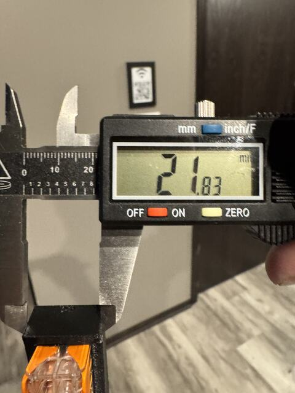
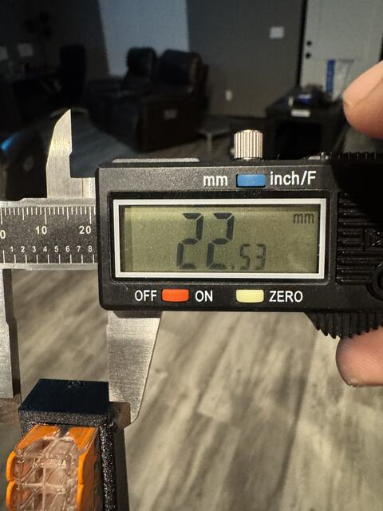

Fits · A bought part in a printed pocket
PET-GF does not stretch.
Glass-filled PET is stiff. A pocket wall gives a few tenths of a millimetre and then an edge lets go. A hard part held by friction gets a pocket drawn at the part’s own size, give or take a tenth of a millimetre.
Seen in PET-GF, black Fiberon PET-GF15 · Mark 1 · textured PEI · left 0.4 mmNot tried in: PETG, PET-CF


“Prints turned out well. My guesses on adjustments were way off. It looks likethe PET-GF does flex enough at some points there to allow me to corner shove in a wago, but when I pressed the wago to the edge, you can see it snapped the edge of the receiver.”
The pocket’s walls against the connector’s catalog size, each side · 12 and 13 November 2026 · tightest first
0.60 under
Derek’s first guess, times one and a half.
0.35 under
His first guess. Neither coupon took a connector straight.
0.10 under
“it’s possible to get in there, but it’s too tight.” Its height differed too.
0.05 under
The next morning: “Size wise I think we’re getting very good”.
0.00
“the WAGO fits in very easily, but is still held pretty well. It’s awesome.”
EARLIER FRONT TOP
{{petgf-fits-junctions:/well_fit_mm}} over
The seat allowance of the page before. “in Y they are a bit loose.”
Three-dot fit coupon · seen through the pocket’s mouth · not to scale
Wall to wall: the catalog size. No gap is drawn.
Under the roof: a fifth of a millimetre, as sliced. Up the build a pocket moves a whole course at a time. See “Height moves one layer at a time”.
The roof is a bridge from wall to wall.
Twice before
On 5 October 2026, on Mark 1, Derek tried ladders of pockets for a ring magnet and for the four posts of a valve. He chose the pocket at the part’s nominal size both times.
What we do now
A ladder for a hard part starts at its catalog size and steps a twentieth or a tenth of a millimetre either way. Each coupon is cut from the real part at the real depth, with dots in the plastic.
Where it stands
Derek accepted the tighter pocket dimensions for the production front top. Both roofs bridge between the sidewalls. The single six-dot coupon came out distorted when printed without a prime tower.
Still openNobody put a caliper on a connector: the catalog size is the maker’s figure. The record does not say which coupon cracked or which pocket was too tight.